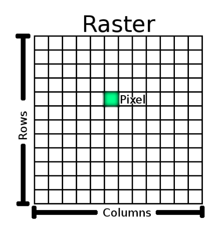
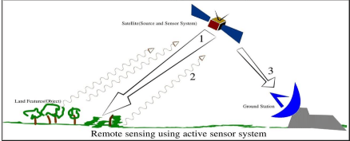
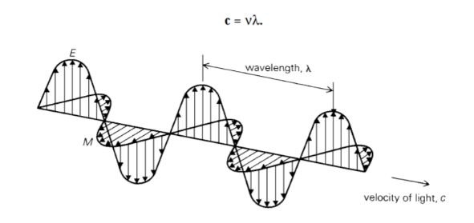
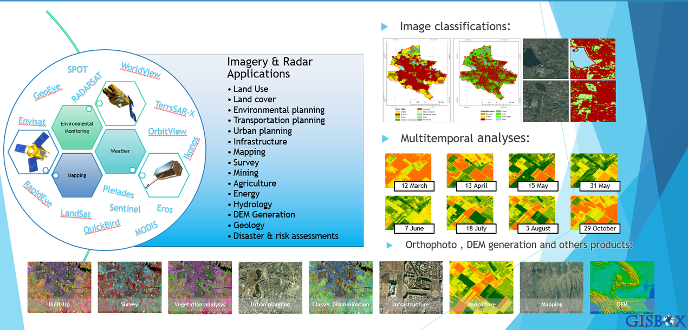

1 Getting started with remote sensing
1.1 Module aims
Operationalise remotely sensed Earth observation data for informing decisions on environmental hazards arising from a changing climate, specifically in relation to urban areas and future urban sustainability.
1.2 Summary
1.2.1 Definition
Remote sensing: acquiring information from a distance(e.g. Landsat and Sentinel), achieved through sensors(Satellites, Planes, Drones, Phones and free standing on the ground or sea).
Waves of an electromagnetic field, travel through space and carry radiant energy = Electromagnetic radiation (EMR). Waves are part of the EMR spectrum.
Energy carried by EMR waves = radiant energy
Energy per unit of time = radiant flux
Energy from the sun = incoming short wave radiation or shortwave radiation
Energy (solar power) from the sun per unit area per unit time (from electromagnetic radiation) = solar irradiance (per unit time - flux)
Energy leaving a surface per unit area per unit time = Exitance (emittance) (per unit time - flux)
Flux means time.
Rayleigh = particles are very small compared to the wavelength
Mie = particles are the same size compared to the wavelength
Non selective = particles are much larger than the wavelength
Data formats 
\[ \left\{ \begin{array}{l} \text{geosynchronous orbit (GSO) = satellite matches the Earth's rotation } \\ \text{geostationary orbit = holds same position, usually only for communications.} \end{array} \right. \]
1.2.2 Two types of sensors
| passive | active |
|---|---|
| use available energy | energy source for illumination |
| emit nothing | emit electromagnetic |
| detecting reflected energy from the sun | - |
| energy in electromagnetic waves | - |
| human eye, camera, satellite sensor | Radar, X-ray, LiDAR |
 |
 |
1.2.3 Electromagnetic waves
\[ \lambda = \frac{c }{v} \]  This kind of energy waves reflected by the surface. (Mastella 2017)
1.2.4 Scattering in action
Sunlight is scattered by particles in the atmosphere and smaller wavelengths scatter easier. Wavelength of visible light(from long to short): red, orange, yellow, green and blue.
Thus both sky and ocean seems blue in eyes for blue light has shorter wavelength and is easy to be scattered and reflected. But there’s no atmosphere on the moon so no scattering can happen, thus the moon have a black sky.
So clouds is a big problem in remotely sensing for it will affect the wavelength received by satellite. Use Synthetic Aperture Radar(SAR) to “see through clouds”.
1.2.5 Resolution
remotely sensed data varied based on four resolution:
\[ \left\{ \begin{array}{l} \text{Spatial} \\ \text{Spectral} \\ \text{Temporal} \\ \text{Radiometric} \end{array} \right. \]
1.2.6 Spectral resolution
Take values for each wavelength across the electromagnetic spectrum to create a spectral signature thus every feature on Earth will have a unique spectral signature.
Constrain: atmospheric window - Water vapour, ozone, carbon dioxide and atmospheric molecules block parts of the the spectrum, we can only observe where there aren’t absorbed by the atmosphere.
1.3 Applications
Remote sensing can be used widely in nature analysis and human activities as shown follows.  (GISBOX, n.d.)
One of the applications I am very interested in is the use of remote sensing technology to predict fires, especially mountain fires. In the American College Students Mathematical Contest in Modeling in 2021, I tried related content, such as how to use remote sensing drones to monitor fire situations and inform local fire brigades in time. This is obviously more mathematical and will use a lot of modeling knowledge, but in fact there is a lack of a lot of remote sensing data, such as the fact that there will be a relatively long period of temperature change before the open fire burns (Maffei, Lindenbergh, and Menenti 2021) and after it is extinguished(Sandal Erzurumlu and Yıldız 2024). If remote sensing technology can be used to detect such changes, it will make a great contribution to the fire prediction and prevention of its recurrence.(Gale et al. 2021)
1.4 Refelction
This lecture is really helpful to me. Honestly, I knew very little about remote sensing before this course, so I chose this course because I wanted to learn something completely new. This lecture gives me a general outline of remote sensing. I have dealt with a lot of data in my undergraduate study, and I was curious about data collection at that time. Unfortunately, how to collect raw data is not included in my undergraduate study, but from this lecture, I can see that this course is what I want to know. At the same time, it seems that this course can serve as a bridge between the data processing and modeling methods I learned before and the actual problem handling, and can transform the actual problems into more familiar data for further analysis. I hope this course will be of great help to the collection and search of data in my subsequent research.
{kind=link}